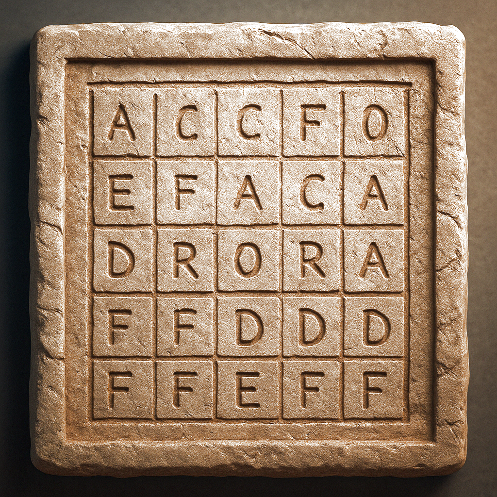

2025-06-30 - Examen Escrito
- Se valorará la claridad y la legibilidad del código.
- Se valorará la correcta definición y reutilización de funciones cuando sea posible.
- Dentro de una sección:
- Cada ejercicio se corrige de forma independiente.
- Todos los ejercicios estarían escritos en un mismo fichero
.py. (No es necesario reimportar ni redefinir entre ejercicios). - Aunque no puedas desarrollar una función o clase en un ejercicio, sigues pudiendo invocarla en los siguientes.
- Queda terminantemente prohibido el uso de cualquier funcionalidad avanzada de Python que no haya sido vista en clase.
1 La Isla del Tesoro
Acabas de ser reclutado por un equipo de exploradores para ayudarles a culminar su búsqueda de un antiguo tesoro. Tras años siguiendo las pistas, creen que han recabado toda la información necesaria para determinar la ubicación de la isla secreta.
- Saben que la isla se encuentra en un archipiélago de unas 20 islas alejado de la civilización. Afortunadamente, conocemos el nombre de esas islas y sus coordenadas.
- También encontraron una misteriosa tablilla de letras que sospechan que está relacionada con La Isla de Partida.

- Por último, han descubierto un pergamino escrito por el antiguo capitán del barco que dice lo siguiente:
¿Mi tesoro? Lo dejé ahí, al lado de la Isla de Partida.
Los exploradores sospechan que quiere decir que el tesoro se encuentra en la isla más cercana a la Isla de Partida, y creen que la forma de determinar dicha isla es utilizando la tablilla de letras.
1.1 Letra secreta (2 puntos)
La tablilla muestra una matriz de letras sin un orden aparente. El olfato del Explorador Jefe le dice que el secreto está en encontrar la letra que se repite 3 veces seguidas en la misma fila. Te ha encargado que programes una función que encuentre dicha letra_secreta. A esto, tú le has respondido que no sería necesario, ya que se ve claramente que la letra es la D, pero sabes que estás tratando con un hombre excéntrico con el que es mejor no discutir. Además, ha insistido en que la función debe ser capaz de trabajar con cualquier tamaño de tablilla. Empiezas a sospechar que este hombre no sabe leer….
- Define una función
letra_secreta(tablilla)que reciba una matriz de letras (list[list[str]]) de tamaño desconocido y devuelva la letra (str) que se repite 3 veces en la misma fila.- Sólo debes buscar tríos de letras repetidas seguidas dentro de una misma fila.
- La variable
tablillaserá una matriz de letras (str) mayúsculas. - Asume que siempre existirá uno y sólo un tríos de letras repetidas seguidas por tablilla.
Ejemplo de ejecución:
1.2 Cargar Islas (1.5 puntos)
Ahora que conocéis la letra secreta, el Explorador Jefe te ha pedido que vayas preparando la lista de islas para su procesado automático. Quiere que cargues la información del fichero en una estructura de datos que permita al programa trabajar con ella de forma sencilla. Además, ha insistido en que, durante el proceso de carga, la función debe escribir por pantalla la información de cada isla que lea. Sospechas que te lo ha pedido para disimular que no sabe leer….
Para ello te ha facilitado un fichero llamado islas.csv que contiene una lista de todas las islas y sus coordenadas.
Las 4 primeras líneas de islas.csv son las siguientes:
nombre,latitud,longitud
Naxos,34.1234,-118.1234
Lemnos,35.5678,-119.5678
Delos,33.9876,-117.9876Observa cómo la primera línea contiene los nombres de los campos, mientras que el resto de líneas contienen los datos de cada isla.
- Define la clase
Islacon los campos:nombre,latyloncon los tipos de datos más adecuados, sabiendo que las coordenadaslatylonson siempre números reales. - Escribe la función
cargar_islas()que lea el ficheroislas.csv(el fichero siempre se llamará así) y devuelva una lista con todas las islas (list[Isla]).- La función debe imprimir por pantalla la información de cada isla que lea.
- El formato debe adecuarse al ejemplo de ejecución.
Ejemplo de ejecución:
Solución
@dataclasses.dataclass
class Isla:
nombre: str
lat: float
lon: float
def cargar_islas():
islas = []
# f = open("islas.csv")
f = open("./src/z_examen_activo/segunda/sol/islas.csv")
f.readline() # cabecera
linea = f.readline()
while linea != "":
datos = linea.strip().split(",")
isla = Isla(
datos[0],
float(datos[1]),
float(datos[2]),
)
print(f"{isla.nombre} ({isla.lat} {isla.lon})")
islas.append(isla)
linea = f.readline()
f.close()
return islas1.3 Isla de Partida (1.5 puntos)
Uno de los exploradores ha sugerido la idea de que la Isla de Partida es la isla cuya inicial coincide con la letra secreta. El Explorador Jefe ha decidido que es una buena idea, y te ha pedido que implementes una función que encuentre dicha isla dentro de la lista de islas que has cargado previamente.
- Define una función
isla_de_partida(islas, letra_secreta)que reciba una lista de islas (list[Isla]) y la letra secreta (str) y devuelva la isla (Isla) cuya inicial coincide con la letra secreta.- Asume que siempre habrá una isla que coincida con la letra secreta.
Ejemplo de ejecución:
Ahora que tenéis cargadas la lista de islas y conocéis la Isla de Partida, tenéis todo lo necesario para encontrar la Isla del Tesoro. Sobre el papel, lo que queda es sencillo: encontrar la isla más cercana a la Isla de Partida. Sin embargo, el Explorador Jefe ha insistido en que utilices buenas prácticas de programación y modularices tu código (¿qué sabrá él de programación, si no sabe leer?).
1.4 Distancia entre Islas (1 puntos)
El primer paso es obtener una forma de calcular la distancia entre dos islas. Las operaciones geodésicas para calcular la distancia entre dos puntos de una superficie esférica son complejas. Sin embargo, el Explorador Jefe afirma que a lo largo de sus viajes ha podido constatar que la tierra es, a pesar de lo que mucha gente crea, plana. Por ello, insiste en, que para calcular la distancia entre dos islas, nos podemos bastar del teorema de Pitágoras.
\[d = \sqrt{(lat_1 - lat_2)^2 + (lon_1 - lon_2)^2}\]
- Define una función
distancia(isla1, isla2)que reciba dos islas (Isla) y devuelva la distancia entre ellas utilizando el teorema de Pitágoras.- La distancia calculada tendrá las mismas unidades (y el mismo tipo) que las coordenadas.
Ejemplo de ejecución:
1.5 Isla más cercana (2.5 puntos)
Ahora que ya sabes calcular la distancia entre dos islas, puedes implementar la función que te permita encontrar la isla más cercana a la Isla de Partida.
- Define una función
isla_mas_cercana(islas, isla)que reciba una lista de islas (list[Isla]) y la isla de partida (Isla) y devuelva la isla más cercana (Isla) a la isla de partida.- La función debe utilizar la función
distancia()que has implementado previamente. - La variable
islasiempre será una de las islas de la listaislas. Evita calcular la distancia consigo misma.
- La función debe utilizar la función
Ejemplo de ejecución:
Solución
def isla_mas_cercana(islas, isla):
isla_cercana = islas[0]
distancia_minima = distancia(isla, isla_cercana)
for i in range(1, len(islas)):
distancia_actual = distancia(isla, islas[i])
if distancia_actual < distancia_minima and distancia_actual > 0:
isla_cercana = islas[i]
distancia_minima = distancia_actual
return isla_cercana1.6 Isla del Tesoro (1.5 puntos)
Con todas las funciones necesarias implementadas, es el momento de impresionar a tu jefe. Es el momento de escribir el programa completo. Partiendo de la tablilla de letras escrita en el propio código…
# Arriba están tus funciones y clases
tablilla = [
["A", "C", "C", "F", "O"],
["E", "F", "A", "C", "A"],
["D", "R", "O", "R", "A"],
["E", "A", "D", "D", "D"],
["F", "F", "E", "F", "F"],
]
# A partir de aquí, sigues tú...- Continúa escribiendo un programa principal que utilice todas las funciones que has implementado para encontrar la Isla del Tesoro.
- La salida del programa debe coincidir con el ejemplo de salida.
- No es necesario que transcribas a mano la tablilla de letras (te la he puesto ahí para facilitarte el trabajo).
Ejemplo de salida (truncada con […]):
Naxos (34.1234 -118.1234)
Lemnos (35.5678 -119.5678)
Delos (33.9876 -117.9876)
[...]
Thasos (34.4567 -118.4567)
===
El tesoro se encuentra en la isla Naxos
Coordenadas: 34.1234, -118.1234
Distancia desde la isla Delos: 0.19205020177026588Solución
def encontrar_isla(letras):
letra = letra_secreta(letras)
islas = cargar_islas()
isla_partida = isla_de_partida(islas, letra)
isla_tesoso = isla_mas_cercana(islas, isla_partida)
return isla_tesoso
isla_tesoso = encontrar_isla(letras)
assert isla_tesoso.nombre == "Naxos"
print("===")
print(f"El tesoro se encuentra en la isla {isla_tesoso.nombre} ")